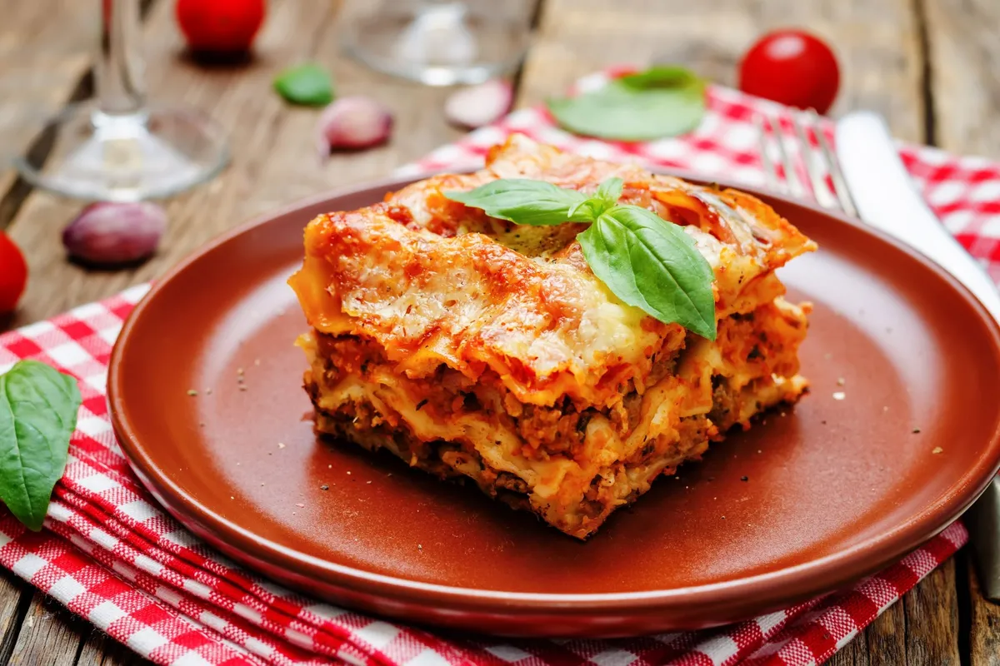

Lasagna bolognese

Beschrijving
Bolognese is één van de bekendste pasta gerechten in Nederland.
Bolognesesaus is een traditionele Italiaanse pastasaus, afkomstig uit Bologna.
Bologna staat bekend om zijn zeer voedzame keuken en de saus is dan ook,
in tegenstelling tot de meeste andere pastasauzen, behoorlijk gevuld.
In dit geval is de bolognese gebruikt om een heerlijke eenvoudige lasagne te maken.
ingredienten
- 1 el Bertolli olijfolie – classico
- 500 g Lasagne bladen
- 1 Bertolli Pastasaus Bolognese in zak a 460 g
- 400 g bechamel saus
- 300 g geraspte Parmezaanse kaas
stappen
- Verwarm de oven voor tot 200 °C. Vet een ovenvaste schaal in met olijfolie.
- Bedek de bodem van de schaal met een laag lasagnevellen. Schep daar royaal Bertolli
pastasaus Bolognese op, een paar lepeltjes bechamel saus en wat Parmezaanse kaas.
Bedek met een laagje lasagnevellen en schep daarop weer bolognesesaus, bechamel en Parmezaan.
Maak zo een aantal lagen en eindig met Parmezaanse kaas. Zorg dat de lasagnevellen goed bedekt zijn met saus.
- Laat de lasagne in de hete oven in minstens 30 minuten gaar en goudbruin worden.